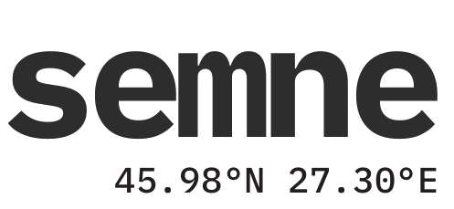

Fetească Neagră
Fruct tânăr, spus direct. Vinul primului an — o propoziție scurtă, fără ocolișuri.
89 lei · LC02
Buciumeni · între Panciu și Nicorești
Din vița Nicorești–Panciu, îngrijită cu răbdarea unei mărturii. Nu am inventat locul. L-am ascultat, an după an, până a început să vorbească.
Aceeași parcelă · două tăceri
Aceeași coastă de deal, același soi, aceeași mână. Ce se schimbă e doar timpul pe care i-l dăm.
cuvinte spune totul din primul an. semne așteaptă — și tace mai frumos.
Fruct tânăr, spus direct. Vinul primului an — o propoziție scurtă, fără ocolișuri.
89 lei · LC02


Aceeași viță, mai multă tăcere. Doi ani în pivniță, sub deal, fără grabă.
109 lei · LS01
III / VI · Manifest
01 — 03Un vin începe cu un loc. Al nostru: dealul de la Buciumeni, lut și nisip, între două podgorii cu memorie lungă.
Nu grăbim nimic. Anul intră în sticlă așa cum a fost — cu ploaia, cu seceta, cu răbdarea lui.
Facem puțin ca să facem bine. Fiecare parcelă are un nume, fiecare sticlă e o mărturie numărată.
De la butuc la mărturie
Butuci de Fetească și Riesling, pe coasta dinspre răsărit. Tăiați scurt, lăsați să se lupte cu dealul.
Manual, în lădițe mici, dimineața devreme. Strugurele ajunge în cramă înainte de căldura zilei.
Fermentație lentă, temperatură joasă. Vinul coboară în liniște, sub deal, și rămâne acolo cât trebuie.
Cuvinte se odihnește un an. Semne — cât are nevoie. Niciodată invers, niciodată la termen.
Sticla pleacă spre tine cu tot ce a fost anul acela — locul, ploaia, mâna. Restul e al tău.
Cuvinte · Semne · Pauze
Derulează pentru a parcurge

79 lei
89 lei

79 lei
109 lei
Se odihnește încă. Iese din pivniță când tace frumos.
Mai are ceva de spus doar timpului. Îl lăsăm.

Rezervele așteaptă în pivniță. Când vor avea ceva de spus, vei ști.
VI / VI · Epilog
Vinul ține minte locul, anul, mâna care l-a cules. Noi doar îl lăsăm să spună.
Domeniul Locus · Buciumeni · 45.98° N 27.30° E

Rămâi aproape de loc
Lăsăm rar vești — doar când pleacă un vin din pivniță sau când anul are ceva de spus. Fără zgomot.
Fără spam. Te poți retrage oricând. Doar 18+.